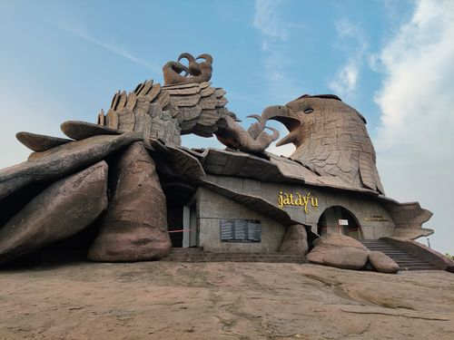

Heritage
Temples, historic landscapes, traditional architecture and stories of the region.
History, heritage and the enduring Story of Jatayu — on the hills of southern Kerala.
Chadayamangalam is a village in Kollam district of Kerala, located along the Ithikkara River and the MC Road, one of the important road corridors connecting the major urban centres of the state.
The village serves as the centre of the Chadayamangalam Block Panchayat, Grama Panchayat and Assembly Constituency, and is home to important public institutions including schools, hospitals and a police station.
The place is also known as Jatayumangalam, reflecting its enduring connection with the Story of Jatayu.
Chadayamangalam is named after Jatayu, the noble bird from the Indian epic Ramayana, who is believed to have valiantly attempted to rescue Sita from Ravana. According to legend, Jatayu was gravely wounded during the battle and fell to the rocks of Chadayamangalam, making this location deeply significant in Indian mythology.
This enduring story has remained deeply connected with the identity of Chadayamangalam. Today, it is brought to life on a monumental scale through the Jatayu sculpture at Jatayu Earth's Center.
The Story of Jatayu is central to the identity of Chadayamangalam and continues to give the place a distinctive position in Indian mythology and Kerala's cultural landscape.

The monumental Jatayu sculpture and surrounding visitor experience have made Jatayupara one of Kerala's most distinctive tourism landmarks.
Official Jatayu Earth's Center ↗Follow the history, landscape and local life beyond the main landmark.
Temples, historic landscapes, traditional architecture and stories of the region.
Rocky hills, green countryside, viewpoints and waterfalls around the village.
Ropeway, hilltop experiences and outdoor activities at Jatayu Earth's Center.
Food, markets, festivals and the everyday character of a Kerala village.
Chadayamangalam lies in Kollam district along the M.C. Road corridor, making it a convenient stop while exploring southern Kerala.